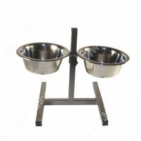

Ваш собака вас любить? Найімовірніше, так. А кішка? А рибка? І взагалі, що таке любов вихованця, і як зрозуміти, як він до вас ставиться? В коротенькому списку тварини перераховані по спадаючій здатності любити людину (тобто прив'язуватися до господаря і висловлювати цю прихильність). Список не претендує на об'єктивність або академічну строгість (хоча фахівці часто спиралися на дані наукових досліджень), але все-таки проливає світло на взаємини господарів з вихованцями.
| 1.Собака: машина обожнювання. |
|  |